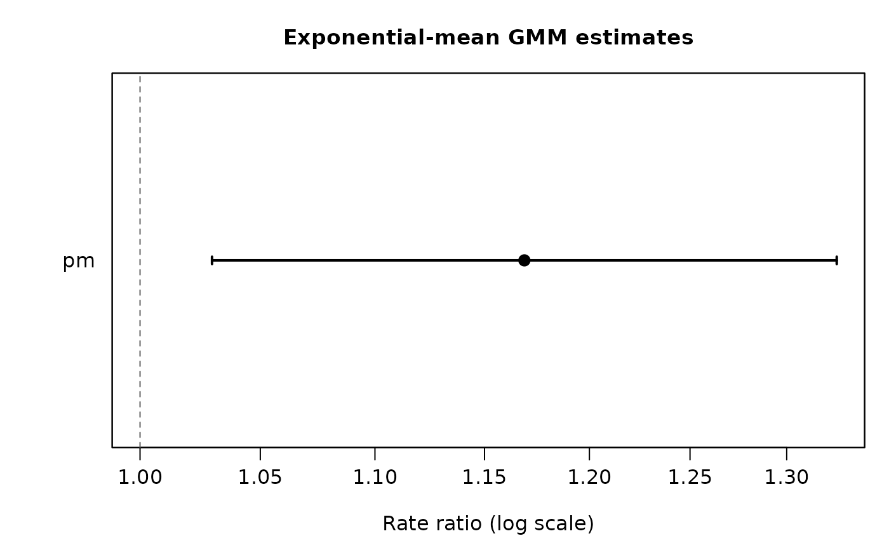

Estimates E(y | x) = exp(x'b + log(expo)) with some regressors
endogenous, by the generalised method of moments on the first-order
moment conditions alone, as Mullahy (1997) and Windmeijer and Santos
Silva (1997) set it out: sum_i z_i u_i(b) = 0 with z the excluded
instruments and the exogenous regressors. The residual (err):
Usage
expgmm(
data,
y,
endo,
inst,
x = NULL,
fe = NULL,
expo = NULL,
clus = NULL,
err = c("mult", "add"),
step = c("two", "one", "iter"),
se = c("cluster", "hc1"),
ssc = c("G", "none"),
level = 0.95,
tol = 1e-10,
maxit = 100
)
# S3 method for class 'expgmm'
print(x, ...)
# S3 method for class 'expgmm'
summary(object, ...)
# S3 method for class 'expgmm'
plot(x, ..., main = NULL, col = NULL, pal = NULL, terms = NULL)Arguments
- data, y, expo, level
As in
ppmlfe().- endo
The names of the endogenous columns.
- inst
The names of the excluded instruments, at least as many.
- x
NULLor the names of the exogenous controls. Forprint()andplot(), an object of classexpgmm.- fe
NULLor the names of one or two fixed-effect columns, as indicator columns (see Fixed effects).- clus
NULL(the firstfecolumn) or the name of one cluster column, forse = "cluster".- err
"mult"or"add": the residual.- step
"two","one"or"iter": the weighting.- se
"cluster"or"hc1".- ssc
"G"or"none": the small-sample factor.- tol
The convergence tolerance: the largest change of a coefficient relative to 1 plus its size.
- maxit
The most Gauss-Newton iterations of a step (and the most weights for
"iter").- ...
Not used by
print()andsummary(); forplot(), passed to the base-graphics call.- object
An object of class
expgmm.- main
NULL(a default title) or one string.- col
NULL(the palette) or colours.- pal
NULL(the session palette, seeplotopt()) or a palette name forblpal().- terms
NULL(every coefficient) or the names of the terms to draw.
Value
An object of class expgmm, a list: coef (as in ppmlfe(),
with rr; the endogenous columns, then the controls; the effects are
not shown); j, one row (stat, df, p; NA where not given);
vcov; n; nsep; ncl; err, step, se, ssc; iter,
conv and nw, the Gauss-Newton iterations of the last step, whether
it converged and the weights used; fe, clus and level.
summary() returns coef.
Details
"mult" (the default), u = y exp(-x'b) - 1, the transformed residual
"IV-T" of Mullahy (1997, equations 4-5, p. 589) and the multiplicative
model of Windmeijer and Santos Silva (1997, equation 3, p. 284). It is
consistent when the unmeasured causes multiply the mean, y = exp(x'b) h + e with E(h | z) = 1: the omitted-variable model in which
observed and unobserved causes enter alike, which Mullahy argues is the
natural one, and the default for that reason.
"add", u = y - exp(x'b), the additive error of Windmeijer and Santos
Silva (1997, equation 2, p. 283; Mullahy's "IV-A", p. 588, which he shows
inconsistent under the multiplicative model). The same instruments are
not in general orthogonal to both residuals; which holds is an
empirical matter that the J test speaks to (Windmeijer and Santos Silva
1997, p. 284; in their application the additive form passes and the
multiplicative is rejected, p. 291).
The weighting (step): "two" (the default), the efficient two-step
estimator: a first step with W = (Z'Z)^-1, the nonlinear
instrumental-variables estimator, then W = S^-1 with S the
variance of the moments at the first estimate (Windmeijer and Santos
Silva 1997, p. 283; Mullahy 1997, p. 589, "a preliminary consistent
estimate (e.g., nonlinear two-stage least squares)"); "one", the
first step alone; "iter", S and the estimate updated in turn until
the estimate settles (the "GMM iterated until convergence" of
Windmeijer and Santos Silva, table 2 notes). Each step minimises
g'Wg by Gauss-Newton from the Poisson start below, halving any step
that does not lower it.
Variance. S is the sum over the clusters of clus of (Z_g'u_g) (Z_g'u_g)' (se = "cluster"), or over the rows ("hc1", the
sum_i (y_i - mu_i)^2 z_i z_i' of Windmeijer and Santos Silva, p. 283).
Two-step and iterated: (G'S^-1 G)^-1, G = sum_i z_i du_i / db'
(Mullahy, p. 589; Windmeijer and Santos Silva, p. 284), with S from
the previous estimate; one step: the sandwich (G'WG)^-1 G'W S W G (G'WG)^-1 with S at the estimate. ssc = "G" multiplies it by G / (G - 1), G the clusters (rows for "hc1"); "none" does not.
Tests use the normal.
Hansen's J. The criterion g'S^-1 g at the two-step (or iterated)
estimate, chi-squared on the number of instruments less the number of
endogenous columns when they are valid (Mullahy 1997, p. 590); not
given for step = "one" (its weight is not the efficient one) or when
exactly identified.
Fixed effects. They enter as indicator columns in both the regressors
and the instruments (every level of the first fe column, standing for
the constant, all but one of the second), so at most 200 levels in all;
groups with no counts are dropped first, as in ppmlfe(). As S has
rank at most the number of clusters, the moment conditions (the
instruments, the controls and the indicator columns) must be fewer than
the clusters: place effects with errors clustered by place cannot be
had, and are refused. For many place effects use ppmlcf(); the
concentrated (mean-scaled) GMM that would absorb them is not built, as
neither paper gives it. The start is Poisson-like: each first-set
effect at the log of its group's counts over its exposure (the constant
at the overall one), everything else at 0.
plot() draws the rate ratio exp(est) of each term with its
interval on a log scale, and returns the rows drawn.
References
Mullahy, J. (1997). Instrumental-variable estimation of count data models: applications to models of cigarette smoking behavior. Review of Economics and Statistics, 79(4), 586-593. doi:10.1162/003465397557169
Windmeijer, F. A. G. and Santos Silva, J. M. C. (1997). Endogeneity in count data models: an application to demand for health care. Journal of Applied Econometrics, 12(3), 281-294.
Examples
# simulated: an unmeasured shock v multiplies the mean and moves the
# exposure; two instruments, day effects, errors clustered by area
set.seed(4)
d <- expand.grid(day = 1:10, area = 1:40)
d$z1 <- rnorm(nrow(d))
d$z2 <- rnorm(nrow(d))
v <- rnorm(nrow(d), 0, 0.5)
d$pm <- 0.6 * d$z1 - 0.4 * d$z2 + v + rnorm(nrow(d), 0, 0.5)
d$crimes <- rpois(nrow(d), exp(0.5 + 0.2 * d$pm + v))
f <- expgmm(d, "crimes", endo = "pm", inst = c("z1", "z2"), fe = "day",
clus = "area")
f
#> expgmm: exponential-mean GMM, multiplicative residual, two-step, 400 rows; errors clustered by area (40)
#> term est se stat p lo hi rr
#> pm 0.1559 0.06466 2.412 0.01588 0.02921 0.2827 1.169
#> Hansen J = 3.22 on 1 df, p = 0.07274
f$j
#> stat df p
#> 1 3.220049 1 0.07274147
plot(f)

# the additive residual, one step
summary(expgmm(d, "crimes", endo = "pm", inst = c("z1", "z2"),
fe = "day", clus = "area", err = "add", step = "one"))
#> term est se stat p lo hi rr
#> 1 pm 0.1582281 0.06382036 2.479273 0.01316505 0.03314248 0.2833137 1.171433